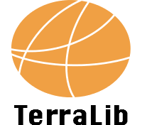

TerraView is a Geographic
Information System (GIS) that provides a
friendly interface allowing you to view and manipulate both vector and
raster data. This
application was developed using geographic library
called TerraLib.
User Guide:
TerraView is free software: you can redistribute it and/or modify it
under the terms of the GNU Lesser General Public License as published
by the Free Software Foundation, either version 3 of the License, or
(at your option) any later version.
TerraView
is distributed in
the hope that it will be useful, but WITHOUT ANY WARRANTY; without even
the implied warranty of MERCHANTABILITY or FITNESS FOR A PARTICULAR
PURPOSE. See the GNU Lesser General Public License for more details.
You
should have received a
copy of the GNU Lesser General Public License along with TerraView.
Comments,
suggestions and
feedbacks can be sent to TerraLib Team (terralib-team@dpi.inpe.br) at
Image Processing Division (DPI), Brazilian National Institute of Space
Research (INPE).
